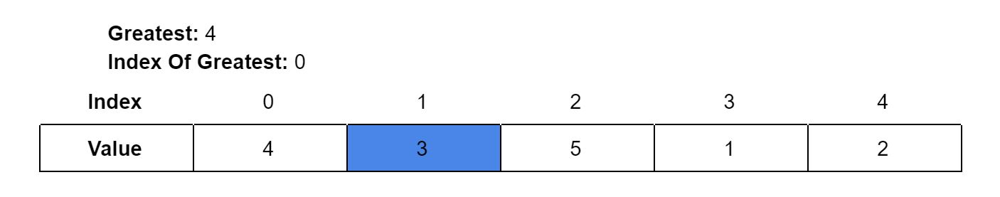
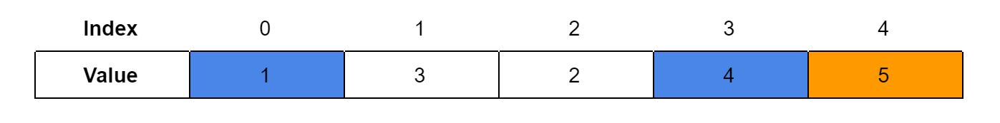
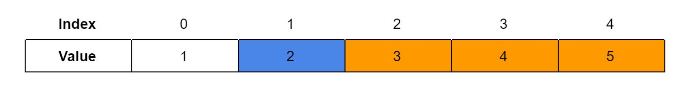

A simple way to sort an array.
public int [] binarySearch(int [] array, int value) {
int lastSortedIndex = array.length;
for (int x=array.length; x>0; x--) {
int greatestValue = array[0];
int greatestIndex = 0;
for (int y=0; y<=x; y++) {
if (greatestValue < array[y]) {
greatestValue = array[y];
greatestIndex = y;
}
}
int lastValue = array[x];
array[x] = greatestValue;
array[greatestIndex] = lastValue;
}
return array;
}
Selection sort is an easy to code and explain; just one sentence is enough to describe how it works! However, it is a slow sorting algorithm. It works by continually looping through the unsorted part array to find the largest number, then putting it at the end of the unsorted array. Here’s a demonstration using an array of 5 numbers:
We would loop through the array, looking for the greatest value. This value will be stored in a variable, which can be initialized as the first element in the array. We will need another variable storing the index of the greatest value.
Since the greatest value is initialized to be the value at index 0, that value doesn’t have to be checked. The index we are checking now is 1, which contains a value of 3. It is not bigger than 4, so none of the variables get updated.
The next index to be checked is 2. Since 5 is greater than the previous greatest value of 2, the greatest index becomes 2.
The next index is 3. Since 1 is not greater than 5, the values are not changed.
The next index is 4. Since 2 is not greater than 5, the values are not changed.
We see that 5 is the greatest value at index 2, so we switch the values at the two indices:
Now, the last index is sorted. We no longer need to consider the last index anymore. We can search through indices 0-3 again, finding the largest value and switching it with the value at index 3:
The orange area represents the sorted area.
We can loop through indices 0-2 and put the greatest value at the end of the range:
We loop through indices 0-1 and put the greatest value at the end of the range. In this case, the greatest value, 2, is already at the end of the range:
The only “unsorted” part left is only index 0, but it doesn’t need to be sorted because it’s only a single index. Thus, we have the sorted array:
created with
Nicepage .